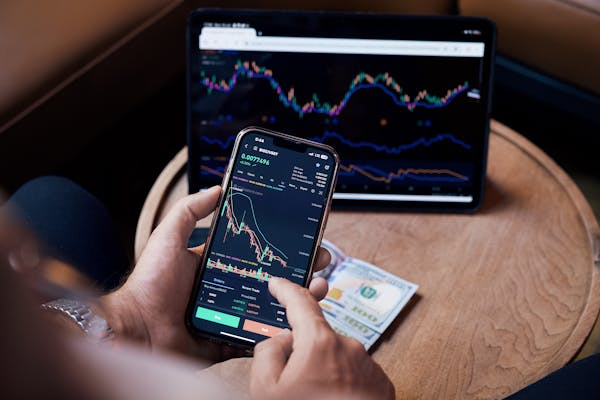

Fractional Shares & Micro-Investing: How to Start Investing with Just $5 (2024 Guide)
Published: May 2025 "You don’t need to be rich to invest—you need to invest to be rich." — Anonymous
Gone are the days when investing required thousands of dollars. Thanks to fractional shares and micro-investing apps, anyone can own pieces of Amazon, Tesla, or even Bitcoin with just spare change. This guide explains what fractional investing is, why it’s revolutionary, and how to start building wealth with small amounts.
What Are Fractional Shares & Micro-Investing?
1. Fractional Shares
- What: Buying a portion of a stock (e.g., $10 of Apple instead of $170 for a full share)
- How It Works: Apps divide shares into tiny pieces (as small as $0.01)
- Example: If Tesla trades at $200, you can buy 0.05 shares for $10
"Fractional shares turn the stock market into a dollar menu—order what you can afford."
2. Micro-Investing Apps
- What: Platforms that let you invest spare change from everyday purchases
- How It Works: Rounds up debit card purchases to the nearest dollar and invests the difference
- Example: Spend $3.50 on coffee → $0.50 gets invested
Why Fractional Investing Is a Game-Changer
1. No More "Too Expensive" Stocks
- Buy high-priced stocks like Amazon ($3,000/share) with $10
- Diversify across multiple companies with small amounts
2. Perfect for Beginners
- Learn investing without risking thousands
- Experiment with different strategies (dividends, growth stocks)
3. Automate Investing
- Set up recurring deposits ($5/week)
- Use round-up features to invest unconsciously
"Micro-investing is like a gym membership for your finances—small, consistent efforts build wealth over time."
How to Start Investing with Fractional Shares
Step 1: Choose a Platform
| App | Best For | Minimum Investment |
|---|---|---|
| Robinhood | Beginners, simplicity | $1 |
| M1 Finance | Automated pie portfolios | $100 (for pies) |
| Public | Social investing community | $1 |
| Acorns | Passive round-up investing | $5 |
Step 2: Pick Your Investments
- ✔ ETFs (Diversified & Low-Risk)
- VTI (Total U.S. stock market)
- VXUS (International stocks)
- ✔ Individual Stocks (Higher Risk, Higher Reward)
- AAPL, MSFT, GOOGL (Tech giants)
- Dividend stocks (KO, PG)
Step 3: Automate & Grow
- Set up weekly deposits ($5–$50)
- Reinvest dividends (Compound growth)
- Avoid overtrading (Buy & hold works best)
Best Fractional Investing Strategies
1. The Coffee Portfolio
- Invest your daily coffee money ($5/day = $1,825/year)
- Example: $5/day into VTI for 10 years = ~$30,000*
- (Assuming 7% annual return)
2. The Round-Up Hack
- Link debit card to Acorns or Stash
- Invest spare change automatically
3. The Dollar-Cost Averaging (DCA) Plan
- Invest $10/week into top stocks (e.g., Amazon, Tesla)
- Smooths out market volatility
"Small investments today can become life-changing sums tomorrow."
5 Common Mistakes to Avoid
- 🚫 Chasing meme stocks (GME, AMC are gambles, not investments)
- 🚫 Ignoring fees (Some apps charge monthly)
- 🚫 Selling too soon (Fractional shares benefit from long-term growth)
- 🚫 Overcomplicating (Stick to ETFs if unsure)
- 🚫 Not reinvesting dividends (Miss out on compounding)
Fractional vs. Full Shares: Key Differences
| Factor | Fractional Shares | Full Shares |
|---|---|---|
| Cost | $1+ | $50–$3,000+ per share |
| Dividends | Prorated based on ownership | Full payout per share |
| Voting Rights | Usually none | Yes (for full shares) |
"Fractional shares let you own the S&P 500 buffet—even if you can’t afford the whole meal."
Final Thought: Start Small, Think Big
You don’t need a fortune to begin—just consistency. Whether it’s $5 a week or spare change round-ups, time in the market beats timing the market.
"The best investment you can make is in yourself—but fractional shares are a close second."
Goodluck!